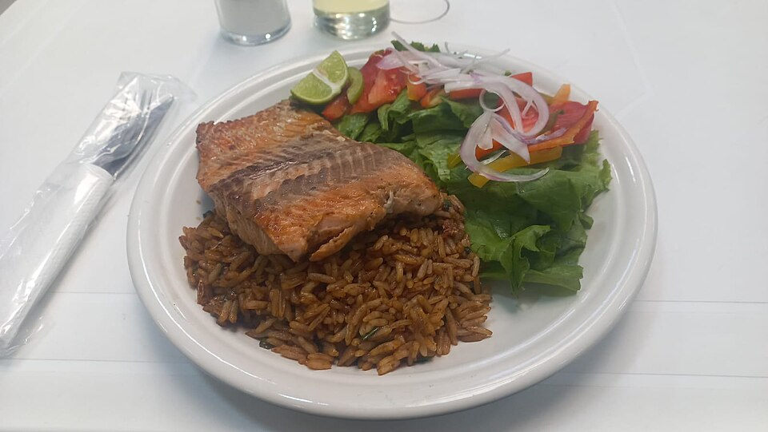
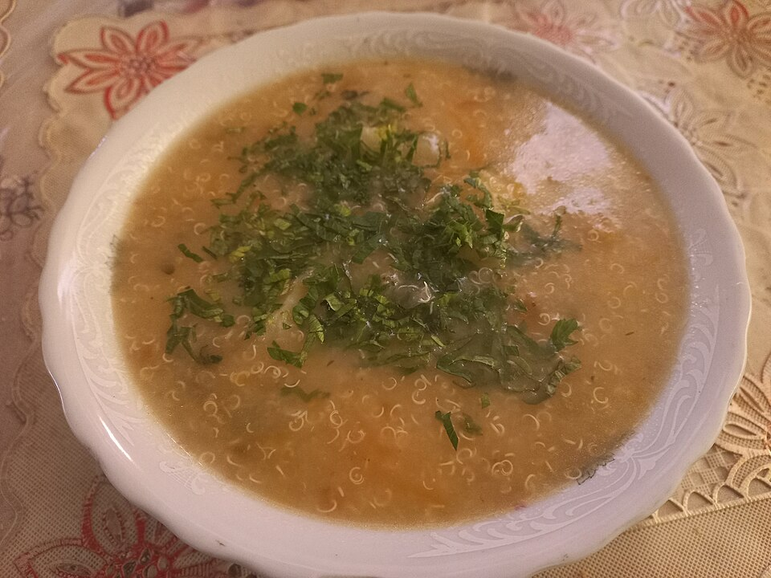
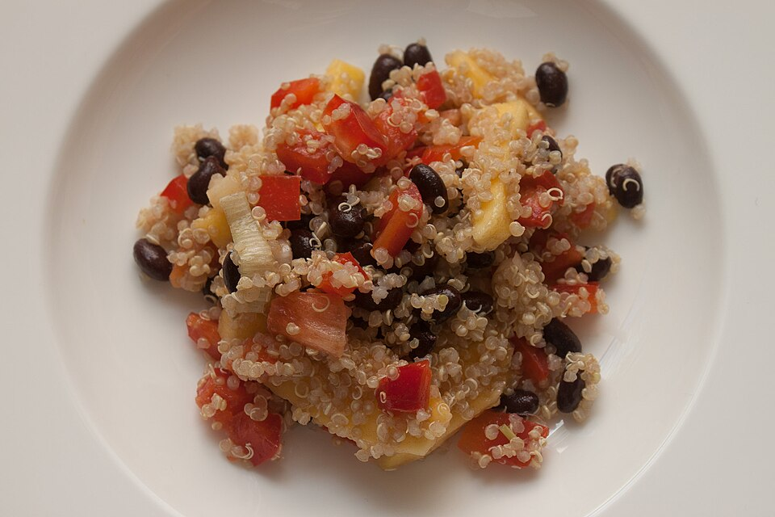

Trucha a la plancha
Un plato del altiplano con verduras frescas.
Foto: Q'orikenti · CC BY-SA 4.0 · recortadaSABORES DE BOLIVIA

Un plato del altiplano con verduras frescas.
Foto: Q'orikenti · CC BY-SA 4.0 · recortada

Para menores usa curvas OMS de crecimiento; desde los 18 años se muestran estimaciones para adultos.
En menores, el resultado usa las curvas OMS de IMC-para-la-edad y no calcula calorías ni prescribe cambios de peso. En adultos se usa Mifflin–St Jeor.
La interpretación cambia según la edad; en menores se compara el IMC con referencias de crecimiento.
La OMS recomienda interpretar el crecimiento con contexto clínico y mediciones sucesivas. Fuente: estándares OMS.
Así Broki podrá elegir recetas más cercanas a lo que disfrutas y a lo que puedes gastar.
El presupuesto es una categoría orientativa, no un precio garantizado. Los costos varían según ciudad, temporada, mercado y tamaño de las porciones.
Combina accesorios y colores para crear su look.